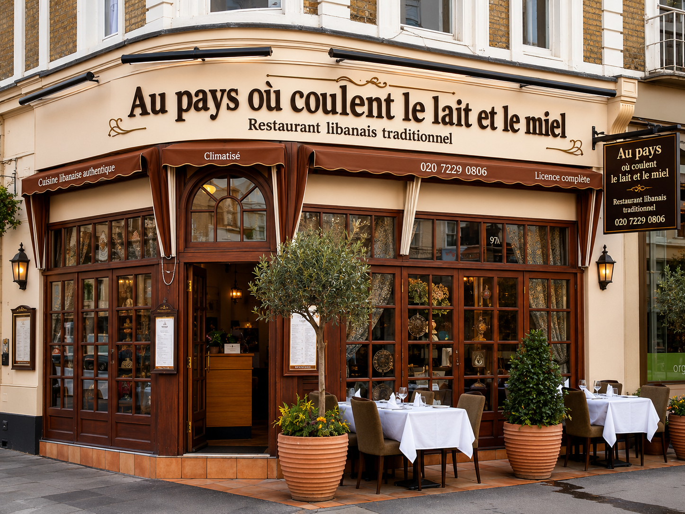
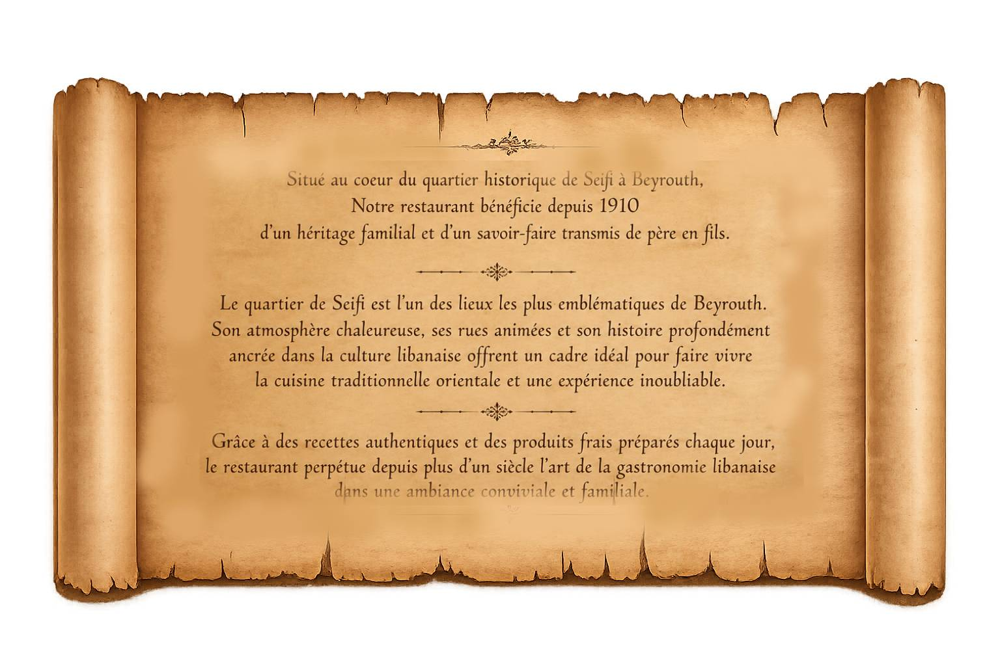
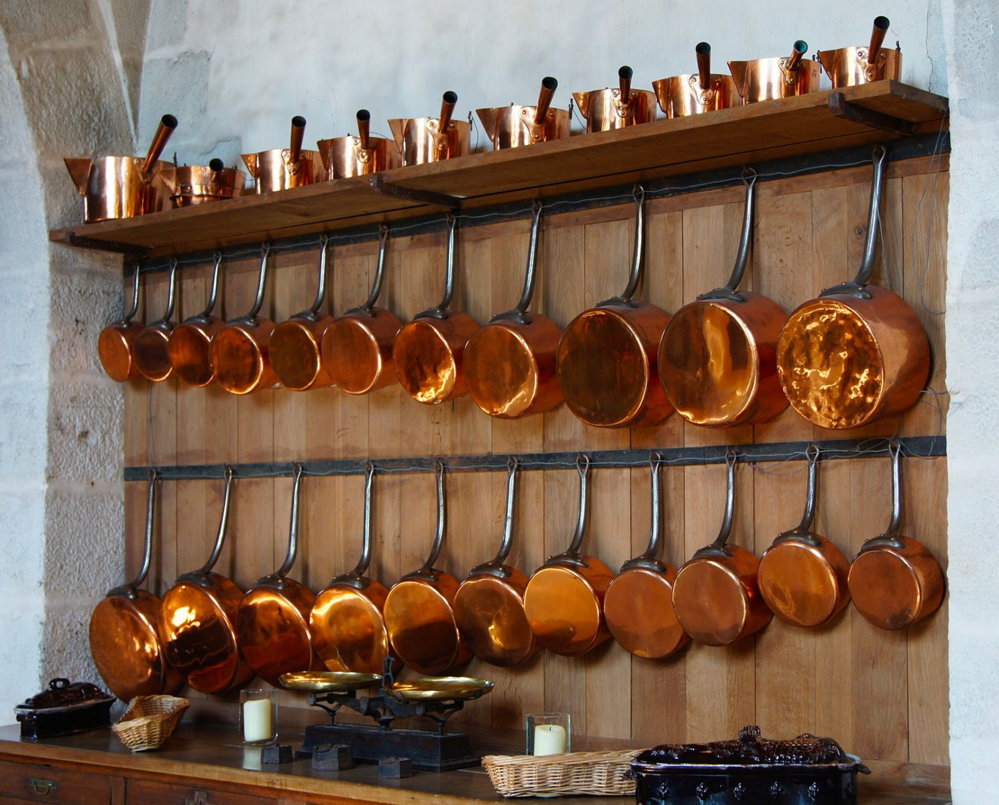
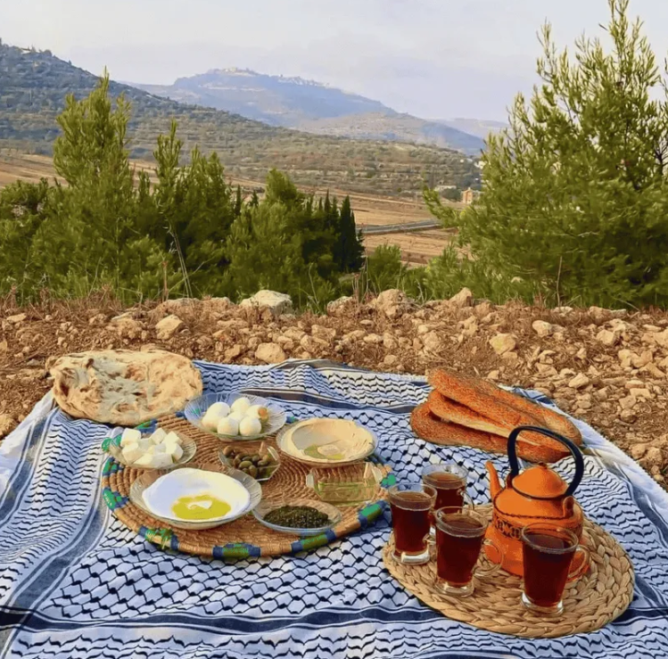

Notre restaurant, notre histoire


Un savoir-faire artisanal

Notre cuisine s’inspire des traditions anciennes et du savoir-faire
artisanal transmis de génération en génération. Chaque recette
raconte une histoire et met à l’honneur les gestes authentiques
de la cuisine orientale.
Des ustensiles traditionnels aux méthodes de préparation,
nous conservons l’héritage culinaire qui fait la richesse
de notre culture.

Entre montagnes, traditions et nature préservée, le Liban offre des paysages uniques qui inspirent notre cuisine et notre héritage culturel. Venez éveiller vos papilles dans notre restaurant et découvrez les saveurs authentiques du pays où coulent le lait et le miel.